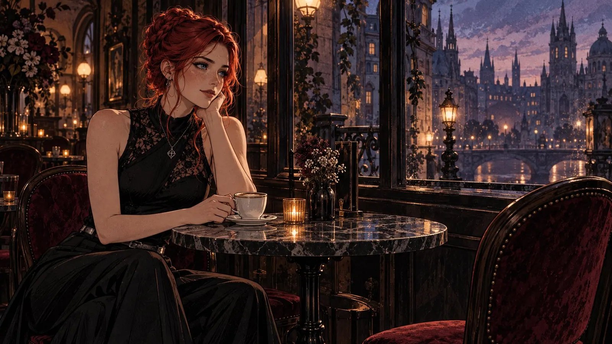
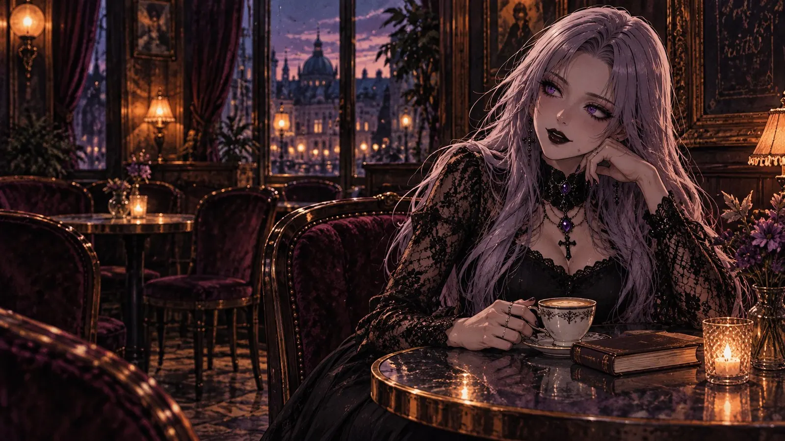
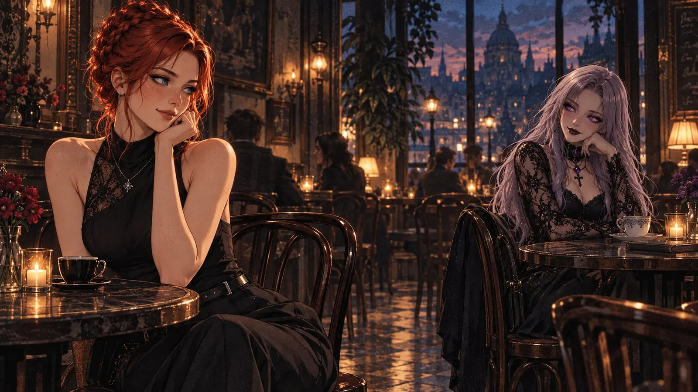
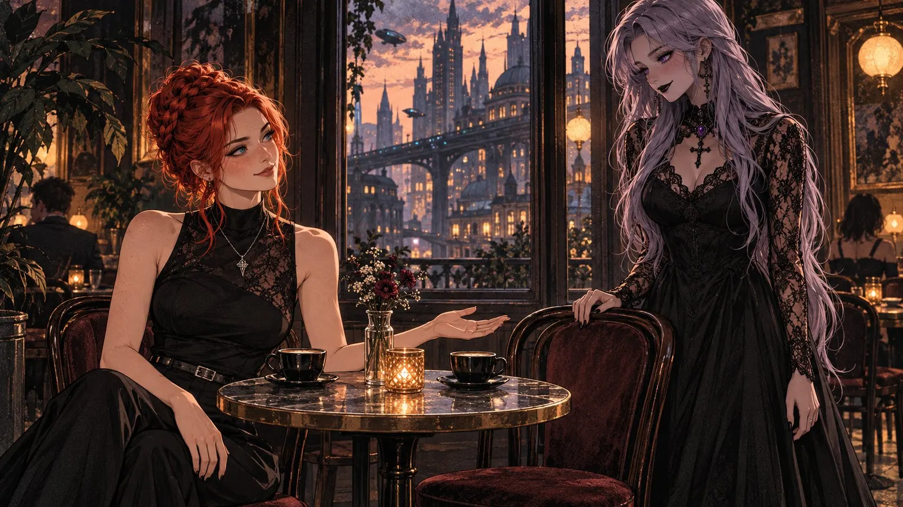
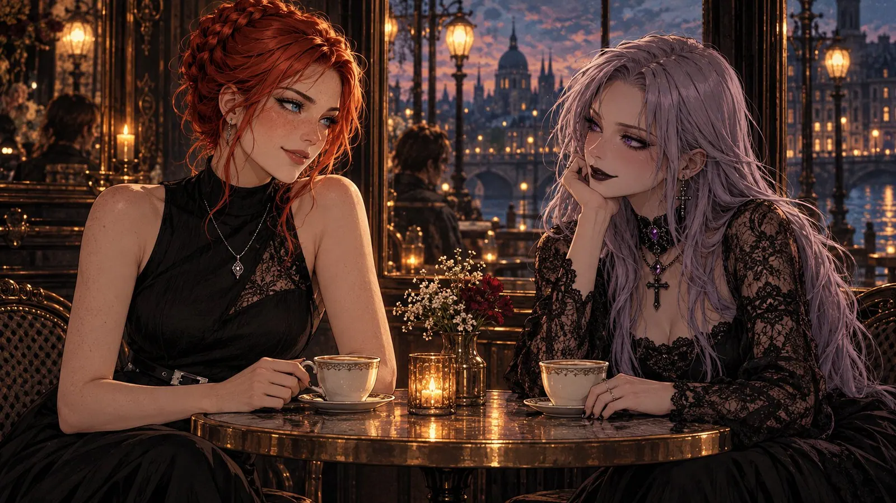
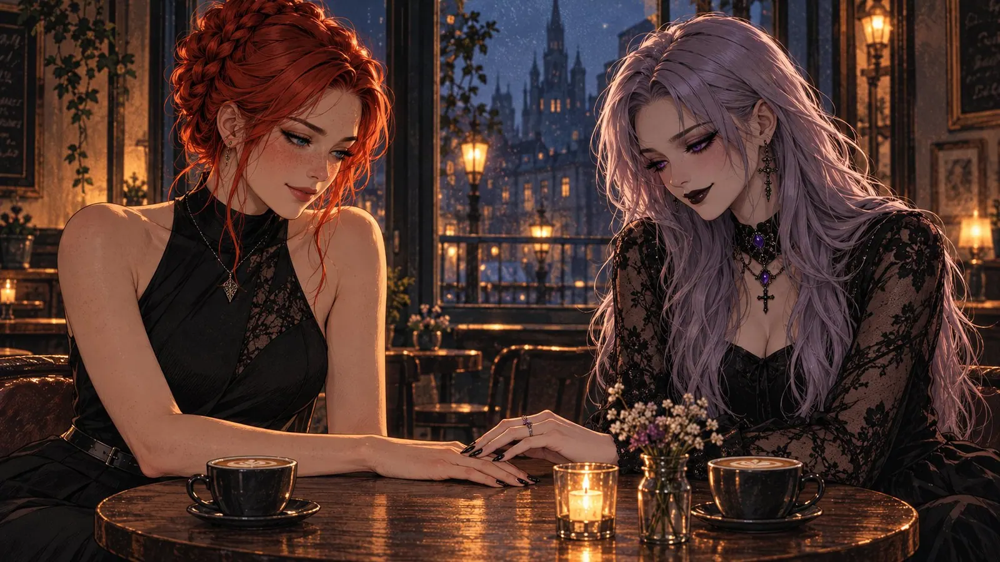
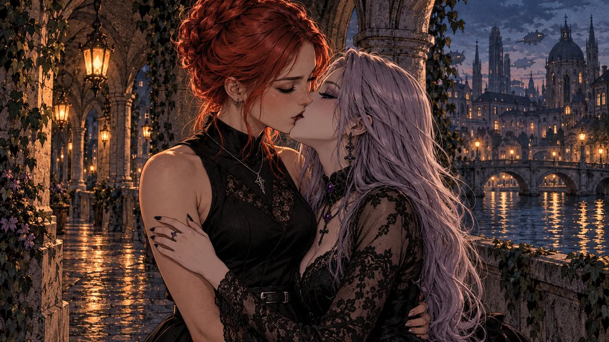
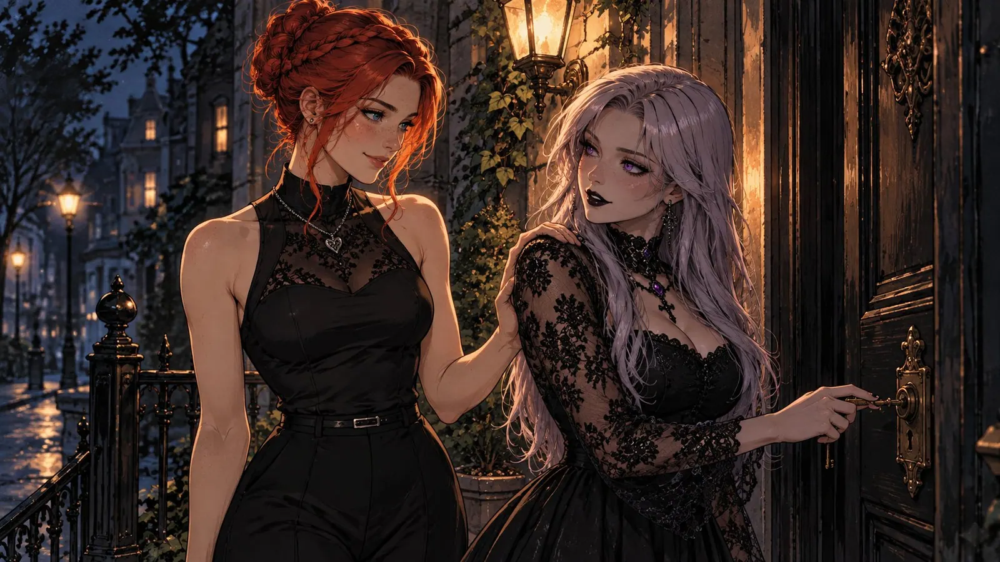
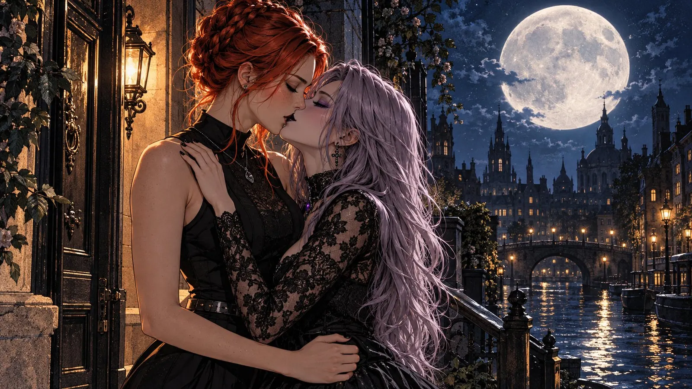
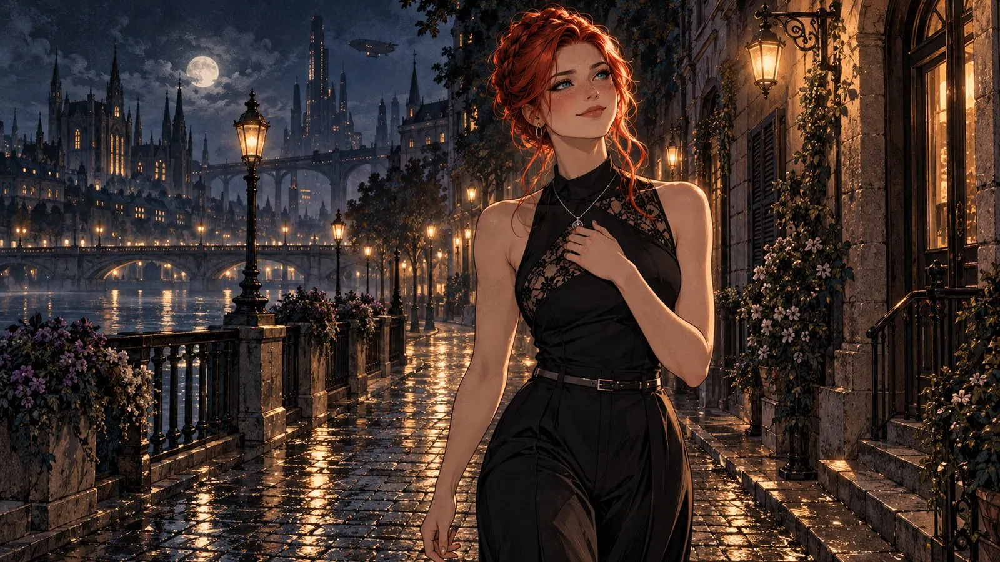

The Chair Across from Me
The café was called "Le Croissant de Lune", and nobody knew whether that meant the moon or the pastry. Madame Odile, who owned the place, had never committed either way. If you asked her, she shrugged and brought you both.

Valerie sat at her table. It wasn't officially her table, there was no sign on it, but it was the small round one of black marble right by the window, and whenever anyone else sat there, Madame Odile looked at that person until they moved of their own free will. From here you could see across the river to the towers of the old town, bracing themselves against the violet evening sky as if they were afraid it might fall on their heads. The lanterns along the bank came on one after another. Someone had to light them, though Valerie had never seen this someone. She suspected a union.The
She came here every evening to spend one cup of coffee not thinking, which is surprisingly hard when you have a head that starts rearranging the furniture the moment it has nothing to do.
The past weeks were that kind of furniture. She rearranged it every evening anyway. Some of it made her smile, just like that, halfway through the cup. Some of it still hurt. Mostly it was the same piece, only seen from the other side. That's how it is with memories that were worth something: they don't have a back side that doesn't shine a little, too.
There had been attempts, afterwards. Kind people, clever people, one of them had even written her a poem, rhymes and all. And every time, Valerie had sat beside them like beside a radio that was switched on but tuned to no station. It hissed politely. Nothing came through. Eventually she had stopped turning the dial, because turning alone gets tiring, too.
So, coffee. So, the window. So, the lanterns and the evening post, droning over the rooftops as a fat, comfortable airship, a little late as always.

That evening, someone was sitting at the table diagonally across, by the wall with the old paintings, where usually only the candle sat.
Valerie noticed the hair first. It was impossible not to. Long and pale, somewhere between silver and lilac, as if someone had taken moonlight and left it to steep in lavender overnight. Then the lace, black, so fine at the sleeves that the skin showed through. A cross on a chain, a violet stone at the throat. Dark lips. A book next to the cup, leather-bound and so old it probably had opinions of its own.
And then the eyes, and that's where Valerie stopped noticing things in order.
They were violet. Not purple, not sort of bluish in the right light, but violet, so decidedly that they must have ordered it that way. And they weren't looking at the book. They were looking, from the corner, very casually and not casually at all, at Valerie.
Valerie looked out of the window, quickly. The towers were still standing. Good. At least they were.

There is a game older than any café, and the rules are simple. You look. You look away. You look back, a fraction too late, so the other one notices. You pretend you were only looking for the clock on the wall, although there is no clock anywhere in the room and everybody knows it.
Valerie had thought she'd forgotten how to play. It turned out to be a bit like riding a bike, except you blush.
The third time, she held the gaze. The stranger rested her chin in her hand, exactly like Valerie, as if they'd agreed on it, and smiled. It was a slow smile, one that took its time and was quite sure it would arrive. Valerie felt it arrive somewhere beneath her breastbone and pull up a chair there without asking.
There it was. The tingle. No hiss this time, no polite nothing. A station. Clear and distinct, and it was playing something she knew, even if she couldn't think of the title.
Madame Odile walked between the two tables with a tray, looked left, looked right, and made the sort of noise that in cats means contentment.

Later, Valerie wouldn't be able to say who had started it. Maybe her. Maybe her hand had simply decided the head was taking too long and pointed at the empty chair all on its own. A small gesture, open palm, nothing more. No words. Words would have broken it, the way you don't poke a soap bubble to check whether it's real.
The stranger closed her book. She rose and came over, unhurried, with the kind of walk where the skirt arrives half a second after the rest of her. She rested her hand on the back of the chair opposite and looked down at Valerie, a smile in the corners of her mouth, her eyes very much awake.
"Is this one free?"
"It's been waiting all evening", Valerie said. "It's just too shy to say anything."
"Then we shouldn't keep it waiting any longer." She sat down. The candle between them flickered, as if it had only just sat down too. "Carmilla."
"Valerie."
"Valerie", Carmilla repeated, as if tasting the word like a new wine. Apparently it tasted good. "That suits you."

They talked.
That sounds like very little, and it was everything. They talked about the café, and about how Madame Odile was really three sisters taking turns, and how you could tell by the way they set down the saucers. They talked about the book. "It isn't a vampire novel", Carmilla said before Valerie could ask. "Everyone asks. Because of the name. I don't drink blood. I drink coffee with three sugars, and that's sinful enough."
Valerie laughed, loud and careless, and a gentleman at the next table looked reproachfully over his newspaper. She kept laughing anyway. It felt as if she'd kept her laugh in a cupboard for a while and had finally taken it out again, and it still fit.
Carmilla told her that she went to bed early and woke early, long before the city did. "The best time", Valerie said. "The world still belongs to you alone." Carmilla looked at her as if Valerie had just given away a secret they both already knew.
At some point Madame Odile set down the second round, unasked. Carmilla pushed the empty cup aside and drew the full one closer.
"My cup never gets full", she said. "No matter how much you pour. I always order another anyway."
She said it lightly, but she didn't mean the coffee, and she knew that Valerie knew. It was a sentence with a small instruction manual tucked inside. I want a lot. I want feeling. I can take it.
"Good", Valerie said. "I like to pour."

They reached for the sugar bowl at the same time. Of course they did. It's so old it should have been banned from every romance novel long ago, and it keeps happening anyway, because life doesn't have an editor.
Carmilla's fingers lay on Valerie's hand. Black nail polish, a ring with a violet stone, cool skin. Neither of them pulled away.
There it was again, that crackle, only louder. Like pulling a jumper over your head in winter and feeling your hair spark. Valerie looked down at their hands, and Carmilla looked down too, and both of them smiled at the table as if something very interesting were written there. Which, in a way, it was.
Carmilla brushed her thumb once across the back of Valerie's hand. Just once. Valerie could have sworn every single freckle on her arm had noticed.
"You're trembling", Carmilla said softly.
"My hands are just cold."
"They're not."
"No", Valerie admitted. "They're not."
Time did what it always does in moments like these: it cheated. A moment ago it had been dusk, and now the night stood outside the windows, the candle had burned down to half, and Madame Odile had begun, with great dignity, to put the chairs up on the other tables. In cafés all over the world, this is the most polite form of "Out".
"I have to go home", Carmilla said, and it didn't sound as if she wanted to.
"I'll walk you", Valerie said, and it sounded exactly the way she meant it.
Outside, it had rained while they weren't looking. The cobblestones gleamed as if someone had freshly polished the whole street just for the two of them, and the lanterns were reflected in it twice, once above and once below, so that nobody would have to stand in the dark.
They walked hand in hand. Valerie didn't quite know when that had happened. Somewhere between the café door and the first lantern their hands had found each other without asking their owners, and the owners had decided not to complain.
Above them, the last train rattled across the viaduct, a chain of warm windows behind which tired people rode home with no idea that something important was happening underneath them. Higher up, an airship pushed its way through the clouds, leisurely as a fat fish in a very large aquarium.
They passed a shop with a moon on its sign. Carmilla told her it sold star charts and compasses that point home instead of north. "Do they work?" Valerie asked. "No idea", Carmilla said. "I've never needed one." And she glanced sideways at Valerie with a look that said this might just be changing.
Valerie laughed, and Carmilla laughed with her, and their shoulders bumped as they walked, and neither of them made room.

Under the arcades by the river, Carmilla stopped.
It was a good place for stopping. Ivy on the columns, lanterns in the arches, and below, the water breaking the city's lights into small golden pieces and putting them back together, over and over, as if it couldn't make up its mind. Carmilla turned to her. She said nothing. She didn't have to.
Valerie kissed her.
Or Carmilla kissed Valerie. That, too, would never be settled later, and it didn't matter.
At first it was hardly a kiss. Just lips touching, as if checking whether the other one was really there. Carmilla's lips were cool from the evening and tasted of coffee and of something sweet underneath, the three sugars presumably. Valerie had never understood why anyone would drink coffee like that. Now she understood.
And the world stopped. Not politely, not step by step, but just like that, like a grandfather clock when you lay a finger on its pendulum. The river was surely still flowing, somewhere, but Valerie no longer heard it. Instead she heard everything else. Carmilla's breath, catching for a moment. The soft rustle of lace as she moved. The tiny clink of a ring against the pendant on Valerie's chain. Her own heart, suddenly so loud she wondered whether they could hear it on the bridge. All her senses, which had been politely spread out all evening over candles and cups and lanterns, turned at once in the same direction, like sunflowers that finally know where the sun is.
And beneath it all lay a thought, quite calm, almost amused: so it's true. They had both known it, all evening, across two tables, over the sugar bowl, through one hand resting on another. This kiss told them nothing new. It simply signed what had been written long before.
Then Carmilla parted her lips, just a little, and breathed in, and Valerie felt that breath all the way down to her knees. The kiss stopped asking. It grew deeper, slower, warmer, one that took its time because it knew it had it. The tip of Carmilla's tongue brushed Valerie's lower lip, and somewhere inside Valerie every lantern came on at once, without anyone consulting the union.
Carmilla's hand lay on Valerie's bare arm, the rings cool against her skin, the fingertips warm, and they wandered slowly upwards, over her shoulder, along her neck, into the nape where a few red strands had escaped the braid. There they stayed and drew Valerie closer. Valerie let herself be drawn. She laid her hands on Carmilla's waist, felt the lace under her fingers, the fine pattern, the warmth behind it, and then the heart, stumbling just like her own.
Carmilla's hair fell over them both like a curtain. It smelled of rain and of something dark and floral that Valerie couldn't name and knew, in that moment, she would never forget. She felt Carmilla's body against hers, the curve of a hip, the soft pressure through thin fabric, every breath falling into rhythm with her own. A small sound escaped her, half sigh, half something else, and Carmilla smiled into the kiss. Valerie could feel it, that smile. You can feel a smile when you're close enough. Nobody had ever told her that.
Somewhere a church clock struck. Valerie didn't count. It could have been twelve or thirteen, and she wouldn't have objected.
When they drew apart, only a few centimetres, their foreheads rested together, and Carmilla's dark lipstick was no longer quite where it belonged. Some of it was with Valerie now. That seemed a fair trade.
"Oh", said Carmilla.
"Yes", said Valerie. "Oh."

Carmilla's house stood on a quiet street beyond the river, narrow and tall, with railings by the steps and a lantern beside the door that looked as if it had lit many goodbyes and hadn't found a bad one yet.
Carmilla searched for her key. Like every key in moments like this, it had wandered to a part of the bag where it never otherwise is. Valerie laid a hand on her shoulder, just to be there, and Carmilla looked back over it at her, the key finally in the lock, and hesitated.
The key was in. The door stayed shut.
"I'm not turning it yet", Carmilla said.
"No?"
"Not yet."

The moon had been hiding behind the clouds all this time, like someone politely trying not to intrude. Now it came out, round and enormous, and hung above the towers as if someone had put it up especially for this moment and forgotten to take the price tag off.
The last kiss was different from the first. Less question, more promise. Carmilla held Valerie close, as if she were something you mustn't drop. Valerie leaned against the cool wall and for a moment had no weight, no past, no head rearranging furniture. Only moonlight and lace and those lips, tasting of coffee and three sugars.
"Tomorrow?" Carmilla asked, very close.
"Same table", Valerie said. "I'll keep the chair free for you."
Carmilla laughed softly, turned the key and was gone. Only the door remained, and a trace of something dark and floral in the air. Before it closed completely, her voice came once more through the gap. "Good night, my beauty."
Valerie walked home alone.

The way was the same as every evening. The same lanterns, the same wet cobblestones, the same river rushing under the same bridges and caring about none of it. And yet everything was new, as if someone had repainted the whole city overnight in a colour that didn't have a name yet.
She laid her hand on her chest. It was loud in there. No hiss. A station, clear and warm, and it was playing the song whose title she hadn't been able to think of earlier. Now she knew it again. It was very simple. It was called: Oh, there you are.
The weeks before hadn't disappeared. Tomorrow they would be standing there again, the furniture with its shining back side. But tonight they stood still, and in the middle of them stood a chair, and in it sat someone with violet eyes and a cup that never gets full.
Valerie smiled up at the moon. The moon, which had seen a great deal, didn't smile back, but it didn't look away either.
At her street, she didn't turn. She kept walking along the river, the long way, humming.
First published on X. Replies and conversation live there.